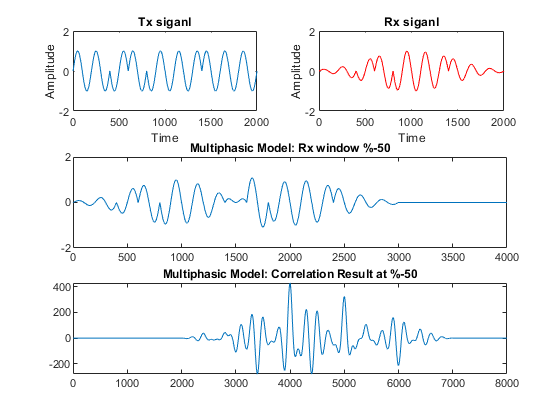
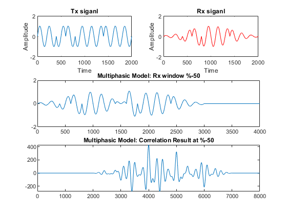
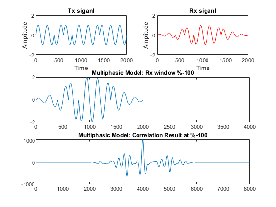
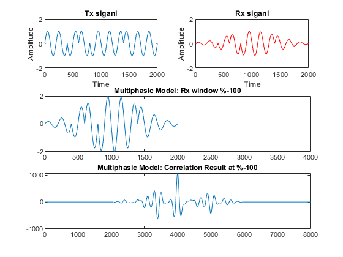

Contents
- Monophasic Ultrasonic Model
- Monophasic Ultrasonic Model: Create Signal
- Monophasic Ultrasonic Model: Create Model
- Multipahsic Ultrasonic Model
- Multipahsic Ultrasonic Model: Create Signal
- Multipahsic Ultrasonic Model: Create Model with Static TX signal
- Multipahsic Ultrasonic Model: Create Model with dynamic TX signal
clear; close all; clc;
Monophasic Ultrasonic Model
An ultrasonic model is a mathematical representation of the propagation of ultrasonic waves in a medium. Ultrasonic waves are sound waves with frequencies above the human hearing range, typically above 20 kHz. Ultrasonic models are used to predict the behavior of ultrasonic waves in a variety of applications, including medical imaging, non-destructive testing, and sonar.
Monophasic Ultrasonic Model: Create Signal
signal_freq = 1e3; number_of_cycles = 10; [t, Tx_signal] = create_monophasic_signal(signal_freq, number_of_cycles); Rx_signal = create_attenuated_signal(Tx_signal); figure(1); subplot(1,2, 1); plot(t, Tx_signal); title('TX signal'); ylim([-2 2]); xlabel('Time'); ylabel('Amplitude'); subplot(1,2, 2); plot(t, Rx_signal, '-r'); title('RX signal'); ylim([-2 2]); xlabel('Time'); ylabel('Amplitude');

Monophasic Ultrasonic Model: Create Model
for precentage = 1:-0.1:0 figure(fix(precentage * 10) + 1) ultrsounic_monophasic_model(t, Tx_signal, Rx_signal, precentage); end figure()

Multipahsic Ultrasonic Model
Multipahsic Ultrasonic Model: Create Signal
signal_freq = 1e3; number_of_cycles = 10; [t, Tx_signal] = create_multiphasic_signal(signal_freq, number_of_cycles); Rx_signal = create_attenuated_signal(Tx_signal); figure(1); subplot(1,2, 1); plot(Tx_signal); title('TX signal'); ylim([-2 2]); xlabel('Time'); ylabel('Amplitude'); subplot(1,2, 2); plot(Rx_signal, '-r'); title('RX signal'); ylim([-2 2]); xlabel('Time'); ylabel('Amplitude');
Multipahsic Ultrasonic Model: Create Model with Static TX signal
for precentage = 1:-0.1:0 figure(fix(precentage * 10) + 1) ultrsounic_multiphasic_model(signal_freq, Tx_signal, precentage); end figure()
 
  
 Multipahsic Ultrasonic Model: Create Model with dynamic TX signal
[t Tx_signal] = create_multiphasic_signal(signal_freq,10); Rx_signal = create_attenuated_signal(Tx_signal); for precentage = 1:-0.1:0 figure(fix(precentage * 10) + 1) Old_Tx_Signal = Tx_signal; ultrsounic_multiphasic_model_dynamic(Tx_signal, Rx_signal, precentage); [t Tx_signal] = create_multiphasic_signal(signal_freq,10); Rx_signal = create_attenuated_signal(Old_Tx_Signal); end